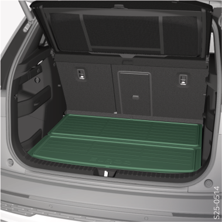

<!-- topicId: 6858375b9fd36b39f625965d22d88110_3_fr_FR | type: topic -->
<h1>Vue d’ensemble</h1>
<html data-dyxml-version="2"><div lang="fr-FR"><div class="topic-content"><section data-type="topic-allgemein" data-dl-contains="block" id="ID_223ccb80c3e651310adf42c70d883c9a-dccc0c75d0729d33ac144525519c092a-fr-FR"><p id="ID_6e0e2678c3e651310adf42c71b66bfa2-dccc0c75d0729d33ac144525519c092a-fr-FR"></p><div data-role="block" data-type="block" id="ID_810f31840da7bd710a5acfc8048cb80f-dccc0c75d0729d33ac144525519c092a-fr-FR" hasIllu="true"><div data-type="illu" id="ID_8952cacd5d6111efbd28c9265f05965c-dccc0c75d0729d33ac144525519c092a-fr-FR"><div data-class="vw-layout-half_column" data-dl-wrapper="figure" id="d2172329e34"><figure id="ID_3fced632b644a642ac14452501c9beb6-dccc0c75d0729d33ac144525519c092a-fr-FR" data-role="" data-type="" data-position=""><div><a data-fancybox="group" media-link="" class="fancybox" data-href="../media/imgef64b60990d47cf4ac1445254cfff456_1_--_--_PNG_3x.png" data-options="{&#34;buttons&#34;:[&#34;fullScreen&#34;, &#34;thumbs&#34;, &#34;close&#34;],&#34;hash&#34;:false}"></img></a></div></figure></div></div></div><div data-role="block" data-type="block" id="ID_52f7f7714e2a0cb7c0a800e20ace4d91-dccc0c75d0729d33ac144525519c092a-fr-FR"><p data-type="p" id="ID_9f2b799ef21baae0ac144525514cb571-dccc0c75d0729d33ac144525519c092a-fr-FR">Autres informations  <a data-topic-id="6858375b9fd36b39f625965d22d88110_3_fr_FR" href="#topic/6858375b9fd36b39f625965d22d88110_3_fr_FR" data-role="dynamic" data-linktext="undefined" data-type="link" data-class="vw-link-short vw-link-arrow" id="ID_bec2b1b7f21b70e60ad8ced30ae94bed-dccc0c75d0729d33ac144525519c092a-fr-FR" checked-link="6858375b9fd36b39f625965d22d88110_3_fr_FR" class="local-topic-link dynamic-link topiclink" data-facets="nid97928302c6a0a9e20cebc7903058c1c5_|_nidf543c02aae02bd2c48cea1c58aee20e5 AND nid6a10d532beb6bb1815d61c592a514037_|_nid542809eedf233300cea567f589a0c5af"><span>Revêtement double</span></a>.</p></div><div></div></section></div></div></html>